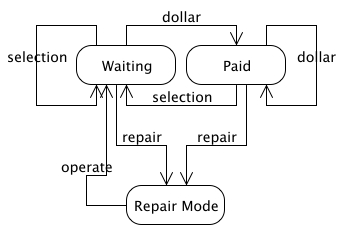
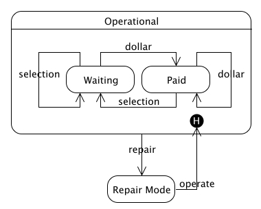

Superstates
Often in statemachines, duplication can arise. For example, the vending machine in our examples may need periodic repairs. It’s not certain which state the vending machine will be in when the repair man arrives. So all states should have a transition into the Repair Mode state.

Diagram 1 - Without Superstates
In this diagram, both the Waiting and Paid states have a transition to the Repair Mode invoked by the repair event. Duplication! We can dry this up by using the Superstate construct. See below:

Diagram 2 - With Superstates
Here we introduce the Operational superstate. Both the Waiting and Paid states are contained within the superstate which implies that they inherit all of the superstate’s transitions. That means we only need one transition into the Repair Mode state from the Operational superstate to achieve the same behavior as the solution in diagram 1.
One statemachine may have multiple superstates. And every superstate may contain other superstates. ie. Superstates can be nested.
History State
The solution in diagram 2 has an advantage over diagram 1. In diagram 1, once the repair man is done he triggers the operate event and the vending machine transitions into the Waiting event. This is unfortunate. Even if the vending machine was in the Paid state before the repair man came along, it will be in the Waiting state after he leaves. Shouldn’t it go back into the Paid state?
This is where use of the history state is useful. You can see the history state being use in diagram 2. In this solution, the history state allows the vending machine to return from a repair session into the same state it was in before, as though nothing happened at all.
Code
The following code builds the statemachine in diagram 2. Watch out for the _H. This is how the history state is denoted. If you have a superstate named foo, then it’s history state will be named foo_H.
require 'rubygems'
require 'statemachine'
vending_machine = Statemachine.build do
superstate :operational do
trans :waiting, :dollar, :paid
trans :paid, :selection, :waiting
trans :waiting, :selection, :waiting
trans :paid, :dollar, :paid
event :repair, :repair_mode, Proc.new { puts "Entering Repair Mode" }
end
trans :repair_mode, :operate, :operational_H, Proc.new { puts "Exiting Repair Mode" }
on_entry_of :waiting, Proc.new { puts "Entering Waiting State" }
on_entry_of :paid, Proc.new { puts "Entering Paid State" }
end
vending_machine.repair
vending_machine.operate
vending_machine.dollar
vending_machine.repair
vending_machine.operate
Output:
Entering Repair Mode Exiting Repair Mode Entering Waiting State Entering Paid State Entering Repair Mode Exiting Repair Mode Entering Paid State
| Written by Micah Martin |  |